nmap, whatweb, dirb, dirbuster, gobuster and Burp Suitenmap, niktoThe customized web page for this project.
Configuring the Web Application
For this lab demonstration I am purposely making this customized application vulnerable with impactful misconfigurations or setups to make the web application more interesting for tools like Nmap, Nikto, or Burp Suite to discover.
WebDAV has been set up on the web application for this demonstration.
Specific Misconfigurations for this lab
- Setting weak authentication for WebDAV
- Directory listings enabled
- Hidden directories and files
- Exposed sensitive configuration
- Crafted XSS vulnerability
Weak Authentication for WebDAV
To get started, let's make sure WebDAV is enabled with Basic Authentication and a weak username/password.
webdav.conf

Directory Listings Enabled
The “directory listing” behavior in Apache is controlled by the Options directive in the Apache configuration files. Specifically, the indexes option enables directory listing. If Indexes is included in the Options directive for a directory, Apache will display a list of files within that directory when no default file (e.g., index.html, index.php) is present.
Snippet of code in the /etc/apache2/apache2.conf file showing Indexes included Options directive.

This is also set for WebDAV in the webdav.conf file.

Hidden Directories and Files
For the purpose of this lab, I have created some hidden and not so hidden directories and files to have something to detect for demonstration purposes. These are directories and files that are stored in the /var/ww/html of the Apache setup, making it easy to manually navigate to in a browser with directory listings enabled on the web server, along for the directory busting tools to easily detect them as well as Burp Suite.
Exposed Sensitive Configuration
Insecurely exposed configuration files, like config.php file in this example, pose a significant security risk to web applications. Such files often contain sensitive data, including data credentials, API keys, or server configurations.
When left publicly accessible, such as in this example, attackers can easily retrieve these files and leverage the information go gain unauthorized access, escalate privileges, or compromise the underlying infrastructure.
This vulnerability highlights the importance of securing sensitive files and following best practices for web server configuration to minimize attack surfaces.

Crafted XSS Vulnerability
To intentionally make the web application vulnerable to a Cross-Site Scripting XSS attack, you need to improperly handle user input, allowing it to be rendered directly in the HTML or JavaScript of the webpage.
To make the web application vulnerable to a Reflective XSS attack I'll need to make a couple of minor changes to the web application configuration.
First, I'll rename index.html to index.php so Apache can treat it as a PHP file.
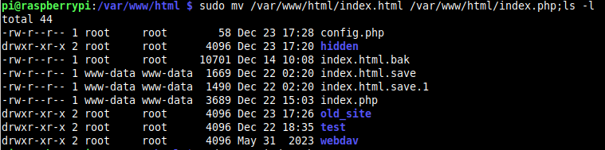From there, I'll update the code to ensure the PHP code for the XSS vulnerability is included in the index.php file.
This code snippet introduces a Reflected XSS Vulnerability because it takes user input from the URL, processes it without validation or sanitization, and reflects it directly into the web page.

Then restart Apache to ensure it recognizes the PHP files correctly.
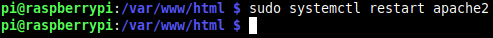Active Recon
Nmap: In the previous lab I did for Web Server Enumeration and Exploitation, I used a handful of nmap commands and other commands to extract web application components.
In this example, I’m going to take all of the nmap commands that I would like to start out with and create a bash script to automate the process and run them altogether.


The scan results can also be saved to a file, like so.

In addition to that, WhatWeb can be run.
Directory Busting
With some hidden and not so hidden files and directories created on the web server specifically for this lab. Let's jump into some directory busting!
 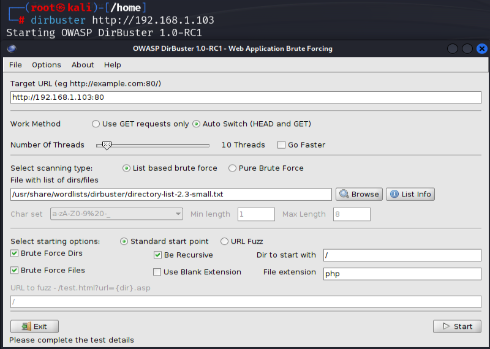
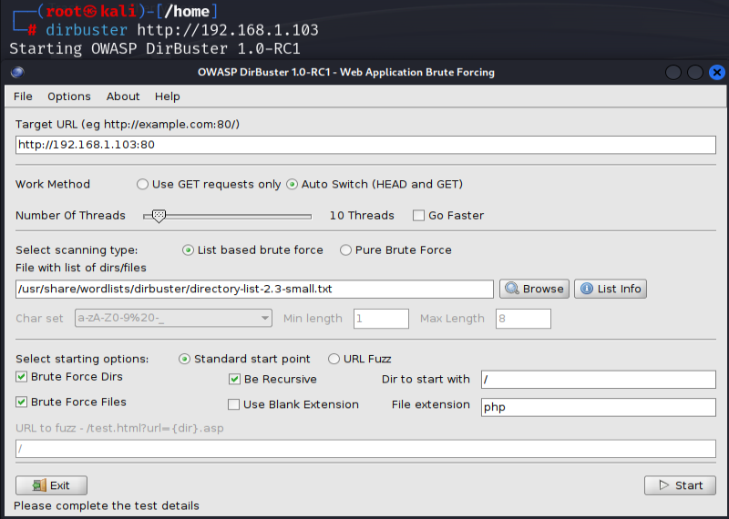


 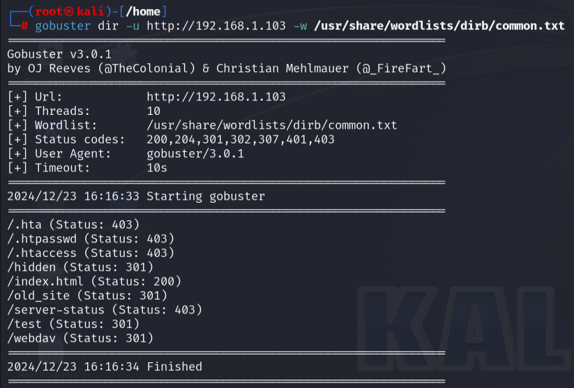
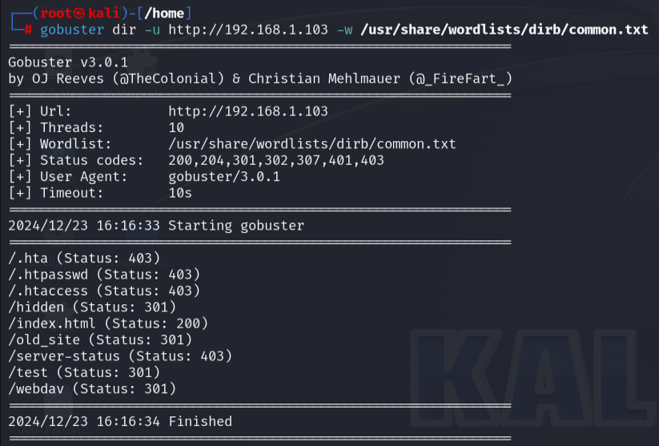
Active Recon with Burp Suite
Here, I'll use Burp Suite to intercept a GET request on the main web page and then send it to Repeater to further analyze the application's behavior by sending different HTTP options and analyzing the responses.
To start, I'll set up Firefox with the proxy settings necessary to intercept web page traffic with Burp Suite.

With the proxy settings in Firefox already to go, I'll go ahead and start Burp Suite.


On the Proxy tab, verify Intercept is on.

With the proxy set and intercept on - we are ready to go. I'm now going to navigate back to the web page and then refresh it.


As a result, we'll capture a GET request for the web page.

To further examine this GET request, let's send it to Repeater.

From here, we can modify the GET request with different HTTP methods and analyze the responses. Depending on how the application is set up and configured, this can identify vulnerabilities, expose information, and overall provide an idea of how the application's behavior is based on these resopnses.
First let's see the response details are from this GET request, often it's the html source code of the web page.

In place of GET, we'll modify it with the HTTP HEAD method.

As a result, it successfully responses with the servers set HTTP headers. There is also some HTTP header information but fewer with using the HTTP OPTIONS method in the request

In using the HTTP PUT method, the response is now showing an HTTP 405 response code for Method Not Allowed. In addition to that the response also shows server and Apache version information.

Here, we have a similiar response using the HTTP POST method, but with the HTTP response code of 405.

Furthermore, if we navigate around the different web page or take advantage of the directory indexing that is set. The Site map in Burp Suite will build the hierarchical structure of the web application.

These are the types of details that can be gathered when using Burp Suite to perform active reconnaissance on a web application.
Vulnerability Scanning
Nmap Vulnerability Script Scan
The screenshot showcases an Nmap scan with the --script vuln option targeting the web server on 192.168.1.103. The scan checks for various vulnerabilities and provides key findings. While it couldn’t detect any DOM-based or stored XSS vulnerabilities, it flagged a potential CSRF (Cross-Site Request Forgery) vulnerability associated with the search form. The scan also identified enabled directory listings for /test/, /hidden/, and /webdav/, which could expose sensitive files or directories. Additionally, the scan confirms the use of Apache/2.4.59, providing valuable reconnaissance details like software versioning and potential exposure points. These results underline how attackers can identify misconfigurations or exploitable areas using automated tools like Nmap.

Nikto Vulnerability Scan
This screenshot illustrates a Nikto scan performed on the same target, 192.168.1.103. Nikto detects multiple issues, including the absence of critical security headers like X-Frame-Options and X-Content-Type-Options, which leave the application vulnerable to clickjacking and MIME-based attacks. The scan also confirms that directory indexing is enabled across several paths, which can reveal sensitive information. Additionally, Nikto identifies allowed HTTP methods (e.g., HEAD, POST, OPTIONS) and checks for older vulnerabilities, emphasizing the importance of secure server configurations to reduce the attack surface.

Exploitation
The primary focus of this lab is performing active reconnaissance and vulnerability scanning on a basic web application. I'll go ahead and demonstrate a couple of exploits however.
Here are some things that can be exploited based on this set up.
Exploiting Reflective XSS Vulnerability
The existing Reflective XSS Vulnerability in the index.php web page file can be exploited in the following ways.
We can take advantage of the $_GET['query'] variable set in index.php to retrieve the value of the query from the URL
http://192.168.1.103/index.php?query=test
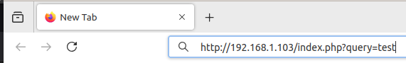
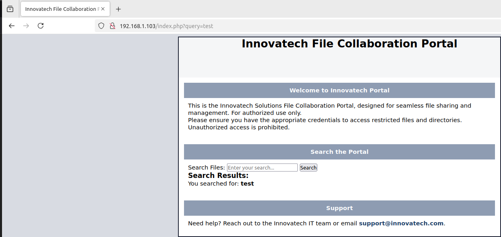
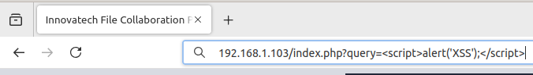
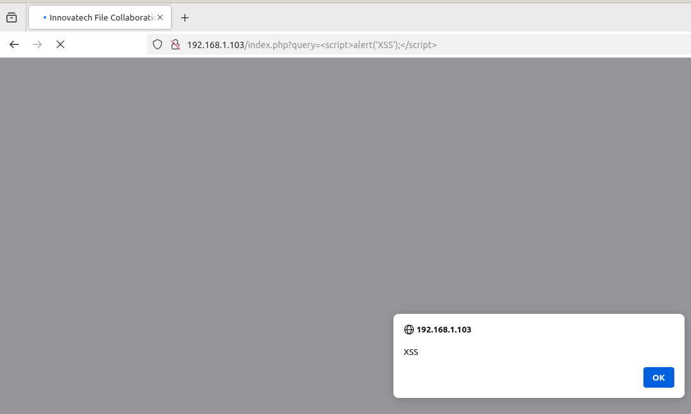
This Reflected XSS vulnerability allows an attacker to inject and execute malicious JavaScript code in the context of the victim's browser. By crafting a malicious URL containing a JavaScript payload and tricking a victim into clicking it, the attacker could perform actions such as:
- Strealing sensitive data: Using JavaScript, an attacker could capture cookies, session tokens, or other data stored in the browser, potentially leading to account takeover or session hijacking.
- Defacing a website: The attacker could inject scripts to display altered content, tricking users into thinking the page has been compromised.
- Phishing attacks: By injecting fake login forms or misleading messages, the attacker could deceive users into submitting their credentials or other sensitive information.
- Spreading malware: An attacker could inject scripts to redirect users to malicious websites or deliver exploit kits.
While this lab demonstrates a basic example of Reflected XSS, these types of attacks can have severe consequences, particularly when sensitive user data or administrative actions are exposed to exploitation. Mitigating such vulnerabilities requires proper input validation and output encoding to ensure malicious scripts cannot execute.
How to Mitigate This Vulnerability
Reflected XSS occurs when user input is directly reflected in the server's response without sanitization or encoding.
Attackers can exploit this to inject malicious scripts that execute in the user's browser, leading to potential data theft, phishing, or malware delivery.
To fix this vulnerability, you need to sanitize and encode user input before outputting it:
The simplest way to mitigate Reflective XSS is to use htmlspecialchars() to sanitize and encode user input before display it.
This is htmlspecialchars() in use.
This converts special characters like < and > into their HTML entities (< and >).
Preventing the browser from interpreting user input as HTML or JavaScript.
By treating user input as plain text, you ensure that no executable code is injected into the response.
Applicability and Scope:
- This fix specifically mitigates Reflected XSS vulnerabilities, where user input is immediately reflected in the response.
- Other types of XSS (e.g., Stored XSS require additional safeguards:
- Stored XSS: Validate and sanitize input before storing it in a database.
- Use proper Content Security Policies (CSP) to limit script execution.
Broader Best Practices
To prevent similiar vulnerabilities across the application:
- Validate Input:Accept only expected input (e.g., allow only alphanumeric characters in the
queryparameter) - Use Content Security Policies (CSP):Implement CSP headers to limit where scripts can execute:
- Disable Unnecessary Features: Turn off features like
eval()in JavaScript and prevent inline scripts when possible.
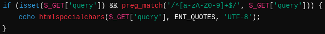
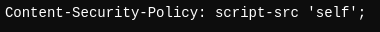
Without proper mitigation, this vulnerability could allow attackers to steal session cookies, impersonate users, or redirect them to malicious websites. Applying these techniques ensures the application remains secure.
Exploiting WebDAV
In this lab implementation exploiting WebDAV is a very simplistic scenario. The webdav directory is configured with Basic Authentication, which makes the perfect scenario to conduct a brute force attack with the use of hydra or the http_login msf auxiliary module.
However in this case, the nikto scan results found the generic account set up for this lab and detected and outputted the login credentials.
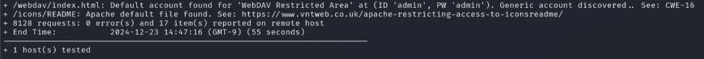So, with that - it's all set to be logged into.
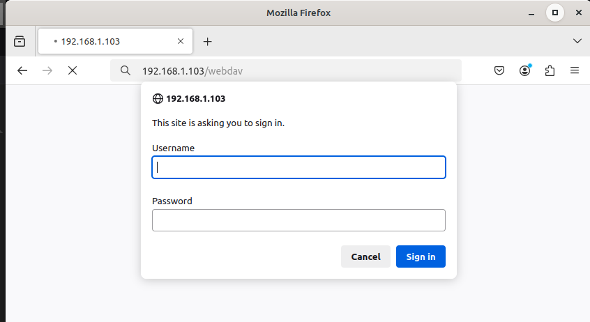 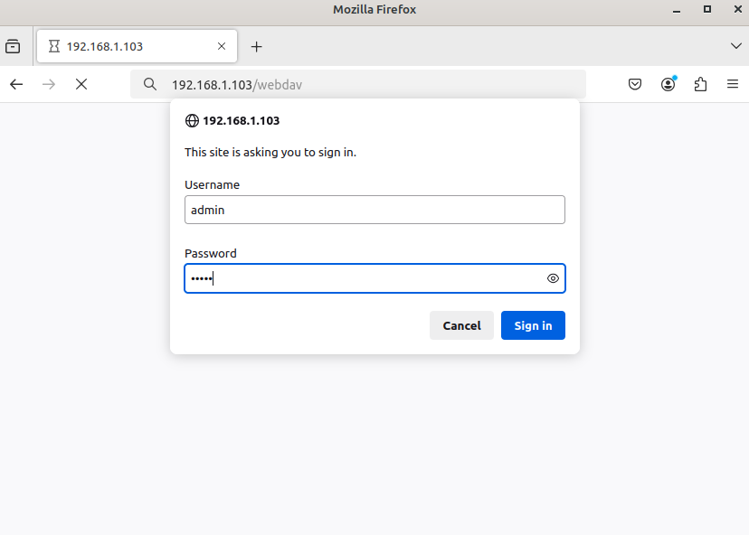 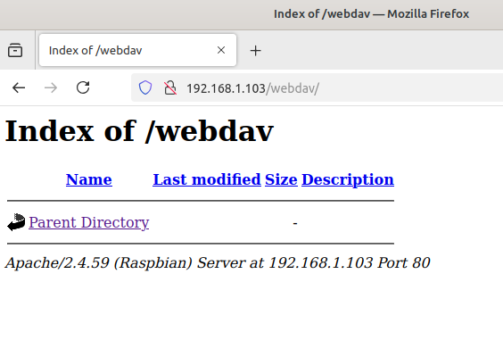To make things interesting, I'll generate a PHP payload with the use of mfsvenom and then upload the generated php payload to the WebDAV directory using cadaver
In refreshing the web page, the php payload upload was successful.
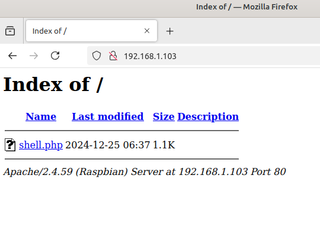Before clicking on the payload within the web application to execute it, I'm going to use Metasploit to setup a listener.

After executing the payload within the web browser, access to the system has been gained.
.png)
Analysis & Reporting
The Web Application Active Recon and Vulnerability Scanning lab showcases a comprehensive approach to identifying, analyzing, and mitigating vulnerabilities in a custom-built web application. The project demonstrates the intentional creation of misconfigurations and vulnerabilities, followed by their identification using industry-standard tools and techniques. This lab highlights the critical importance of proactive security testing and showcases technical proficiency in configuring servers, identifying risks, and exploiting vulnerabilities to emphasize real-world impacts.
Methodology
Active Reconnaissance:
- Identified HTTP methods and server details using Burp Suite's Repeater and Nmap.
- Performed directory busting with Dirb, Dirbuster, and GoBuster to discover hidden files and directories.
- Analyzed server responses to different HTTP methods to detect exposed information.
Vulnerability Scanning:
- Ran Nmap’s --script vuln to identify misconfigurations such as CSRF vulnerabilities and directory indexing.
- Used Nikto to identify missing security headers, outdated configurations, and accessible resources.
Exploitation:
- Exploited a reflected XSS vulnerability to demonstrate potential for data theft, phishing, and session hijacking.
- Uploaded a PHP reverse shell payload via WebDAV after bypassing weak authentication.
Key Findings
Reflected XSS Vulnerability:
- Impact: Could allow attackers to steal sensitive data, redirect users to malicious sites, or hijack sessions.
- Example: Injected malicious JavaScript via the query parameter.
Weak WebDAV Authentication:
- Impact: Allowed unauthorized access to the file upload feature, leading to arbitrary payload execution.
- Example: Uploaded a PHP reverse shell payload to gain system access.
Exposed Directory Listings:
- Impact: Allowed attackers to enumerate files and directories, increasing the attack surface.
- Examples: Discovered /test, /hidden/, and /webdav/.
Missing Security Headers:
- Impact: Increased risk of clickjacking and MIME-based attacks.
- Example: X-Frame-Options and X-Content-Type-Options headers were missing.
Exploitation Scenarios
XSS Exploitation:
- Provided two basic examples of exploiting a XSS attack and explained how a malicious attacker can exploit this vulnerability in different ways.
- Gained full system access by uploading and executing a PHP reverse shell, highlighting the critical impact of weak authentication and directory indexing.
WebDAV Exploitation:
- Gained full system access by uploading and executing a PHP reverse shell, highlighting the critical impact of weak authentication and directory indexing.
Mitigation Recommendations
Reflected XSS:
- Sanitize user input using
htmlspecialchars()to encode special characters. - Limit Content Security Policies (CSP) to limit script execution.
Weak WebDAV Authentication:
- Use strong, unique credentials and enforce HTTPS for secure communication.
- Restrict file types and limit HTTP methods allowed.
Directory Listings:
- Disable directory indexing in Apache by removing
Indexesfrom the Options directive.
Missing Security Headers:
- Add headers such as X-Frame-Options, Content-Security-Policy (CSP), and X-Content-Type-Options to harden the application.
Lessons Learned
This lab reinforced my understanding of web application security fundamentals, including how misconfigurations and vulnerabilities are identified, exploited, and mitigated.
It also provided hands-on experience with widely used tools and techniques, improving my ability to conduct thorough security assessments and produce actionable reports.